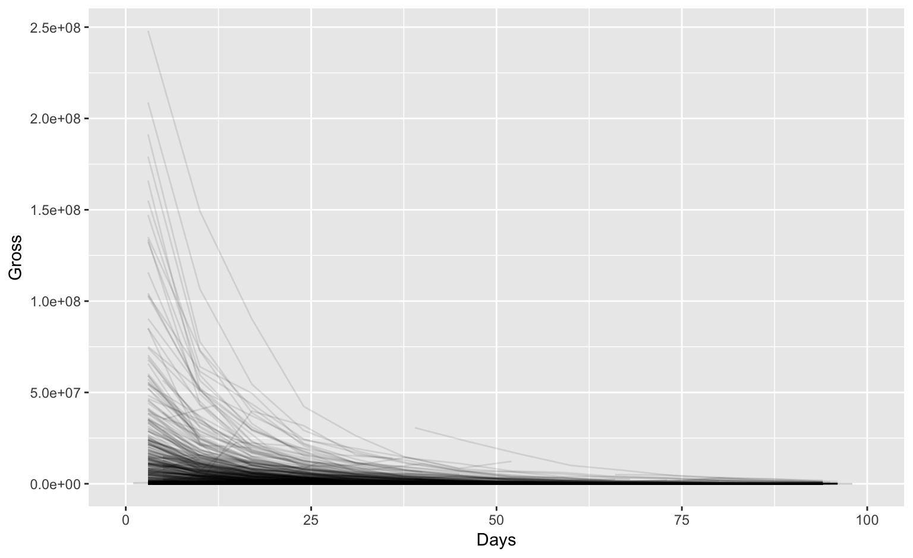

Messy (3)
Messy (3): Multiple observational units are stored in the same table.
What does that mean? The key is split, i.e. for some values all key variables are necessary, while other values only need some key variables.

Heike Hofmann
Messy (3): Multiple observational units are stored in the same table.
What does that mean? The key is split, i.e. for some values all key variables are necessary, while other values only need some key variables.
Splitting into separate datasets:

The-Numbers website publishes weekly charts of the gross income of all movies playing across the US. A set of scraped data with movies for the last two years is available in the repo.
## Rank Rank.Last.Week Movie Distributor
## 1 1 (1) Split Universal
## 2 2 new A Dog’s Purpose Universal
## 3 3 (3) Hidden Figures 20th Century Fox
## 4 4 new Resident Evil: The Final Ch… Sony Pictures
## Gross Change Thtrs. Per.Thtr. Total.Gross Days date
## 1 $25,655,440 -36% 3,199 $8,020 $77,385,530 10 2017-01-27
## 2 $18,222,810 3,059 $5,957 $18,222,810 3 2017-01-27
## 3 $14,003,275 -11% 3,351 $4,179 $104,024,969 36 2017-01-27
## 4 $13,601,682 3,104 $4,382 $13,601,682 3 2017-01-27What are the key variables? Why is the key split?
box <- box %>% mutate(
Gross = parse_number(Gross),
Total.Gross = parse_number(Total.Gross),
Days = parse_number(Days),
Thtrs. = parse_number(Thtrs.)
) Movie name, and Distributor.# if we get an error with a message about the length of a dataset we know we have a problem
movie <- box %>% group_by(Movie) %>% summarize(
Distributor = unique(Distributor)
)Error: expecting a single value
Bingo! but what now?
box %>% group_by(Movie) %>% summarize(
Distributor = length(unique(Distributor))
) %>% arrange(desc(Distributor))## # A tibble: 1,386 × 2
## Movie Distributor
## <fctr> <int>
## 1 Girlhood 2
## 2 The Witness 2
## 3 ’71 1
## 4 1,000 Rupee Note 1
## 5 10 Cloverfield Lane 1
## 6 10 Days in a Madhouse 1
## 7 13 Hours: The Secret Soldie… 1
## 8 1915 1
## 9 2015 Oscar Shorts 1
## 10 2016 Oscar Shorts 1
## # ... with 1,376 more rowsThe movie Girlhood has two distributors: " " and Strand - i.e. the first week the distributor is missing, let’s fix that:
box <- box %>% mutate(
Distributor = replace(Distributor, Movie=="Girlhood", "Strand")
)The movie The Witness is actually two different movies, one that came out in October 2015, another one that came out in June 2016. Movie name by itself is not a key. Let’s derive the release date for each movie:
box <- box %>% mutate(Release = lubridate::ymd(date)-Days)movie <- box %>% group_by(Movie, Release) %>% summarize(
Distributor = unique(Distributor)
)
dim(movie)## [1] 1406 3length(unique(box$Movie))## [1] 1386Still not quite right - the number of days is a derived variable, and is not quite consistent.
box %>% ggplot(aes(x = Days, y = Gross)) +
geom_line(aes(group = Movie), alpha = 0.1) + #scale_y_log10() +
xlim(c(0, 100))## Warning: Removed 1089 rows containing missing values (geom_path).